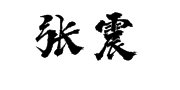

Zhen Zhang Ph.D. Student
Department of Computer Science and Technology |

|
Biography
Zhen Zhang is pursuing his Ph.D. degree in Computer Science and Technology at Zhejiang University. His research interests are mainly in graph representation learning, recommender systems and deep reinforcement learning.
Publications
- Sheng Zhou, Jiajun Bu, Zhen Zhang, Can Wang, Lingzhou Ma, Jianfeng Zhang. Cross Multi-Type Objects Clustering in Attributed Heterogeneous Information Network. In Proceedings of Knowledge-Based Systems (KBS 2020).
- Zhen Zhang, Jiajun Bu, Martin Ester, Jianfeng Zhang, Chengwei Yao, Zhi Yu, Can Wang. Hierarchical Graph Pooling with Structure Learning. In arXiv:1911.05954, 2019. [code]
- Zhen Zhang, Hongxia Yang, Jiajun Bu, Sheng Zhou, Pinggang Yu, Jianwei Zhang, Martin Ester, Can Wang. ANRL: Attributed Network Representation Learning via Deep Neural Networks. In Proceedings of the Twenty-Seventh International Joint Conference on Artificial Intelligence (IJCAI 2018). [code]
Experiences
Professional Service